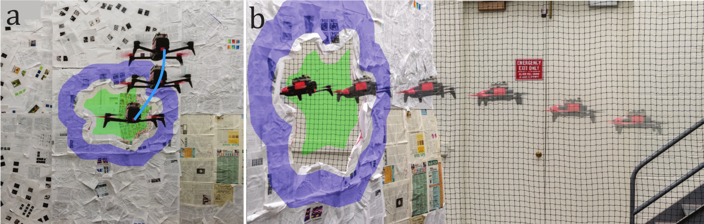

Fig. 1. Different parts of the pipeline: (a) Detection of the unknown gap using active vision and TS2P algorithm (cyan highlight shows the path followed for obtaining multiple images for detection), (b) Sequence of quadrotor passing through the unknown gap using visual servoing based control. The blue and green highlights represent the tracked foreground and background regions respectively.
Although quadrotors, and aerial robots in general,
are inherently active agents, their perceptual capabilities
in literature so far have been mostly passive in nature.
Researchers and practitioners today use traditional computer
vision algorithms with the aim of building a representation
of general applicability: a 3D reconstruction of the scene.
Using this representation, planning tasks are constructed
and accomplished to allow the quadrotor to demonstrate
autonomous behavior. These methods are inefficient as they
are not task driven and such methodologies are not utilized
by flying insects and birds. Such agents have been solving the
problem of navigation and complex control for ages without
the need to build a 3D map and are highly task driven.
In this paper, we propose this framework of bio-inspired
perceptual design for quadrotors. We use this philosophy to
design a minimalist sensori-motor framework for a quadrotor
to fly though unknown gaps without a 3D reconstruction of the
scene using only a monocular camera and onboard sensing. We
successfully evaluate and demonstrate the proposed approach
in many real-world experiments with different settings and
window shapes, achieving a success rate of 85% at 2.5m/s
even
with a minimum tolerance of just 5cm. To our knowledge, this
is the first paper which addresses the problem of gap detection
of an unknown shape and location with a monocular camera
and onboard sensing.